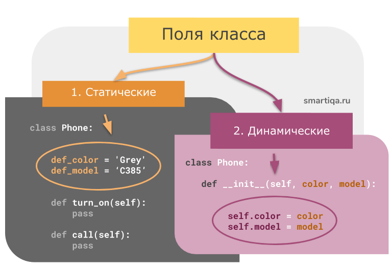

| Тема 5. Поля (свойства) класса в Python. | ||
| Назад | ||
|
Поля(они же свойства или переменные) можно (так же условно) разделить на две группы:
 1. Статические поля (они же переменные или свойства класса)
Это переменные, которые объявляются внутри тела класса и создаются тогда, когда создается класс. Создали класса - создалась переменная:
Python
Вот так выглядит список атрибутов класса после его создания:
Python
Кроме того, у нас есть возможность получить или изменить такое свойство, просто обратившись к самому классу по его имени(экземпляр класса при этом создавать не нужно).
Python - Интерактивный режим
2. Динамические поля (переменные или свойства экземпляра класса)
Это переменные, которые создаются на уровне экземпляра класса. Нет экземпляра - нет его переменных. Для создания динамического свойства необходимо обратиться к self внутри метода:
Python
Python - Интерактивный режим
Что такое self в Python?
Служебное слово self - это ссылка на текущий экземпляр класса. Как правило, эта ссылка передается в качестве первого параметра метода Python: class Apple: ____# Создаем объект с общим количеством яблок 12 ____def __init__(self): ________self.whole_amount = 12 ____# Съедаем часть яблок для текущего объекта ____def eat(self, number): ________self.whole_amount -= number Стоит обратить внимание, что на самом деле слово self не является зарезервированным. Просто существует некоторое соглашение, по которому первый параметр метода именуется self и передает ссылку на текущий объект, для которого этот метода был вызван. Хотите назвать первый параметр метода по-другому - пожалуйста. В других языках программирования(например, Java или C++) аналогом этого ключа является служебное слово this.
Обратите внимание, что объект класса сочетает в себе как статические атрибуты(уровня класса), так и динамические(собственные - уровня объекта).
Подытожим:
|
||
| Конспект подготовлен Бакулиным А. М. 2012 год. | ||